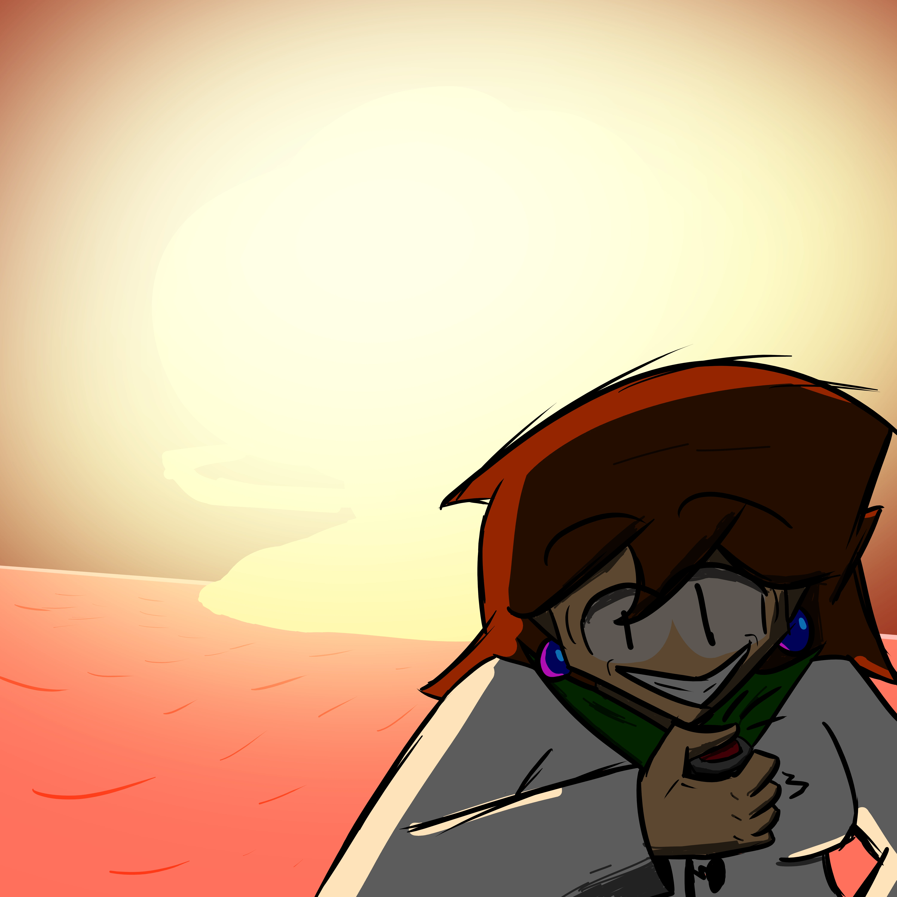
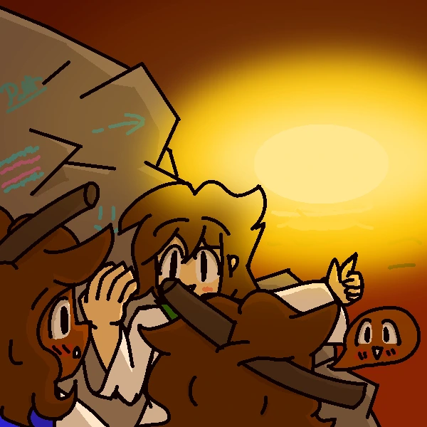
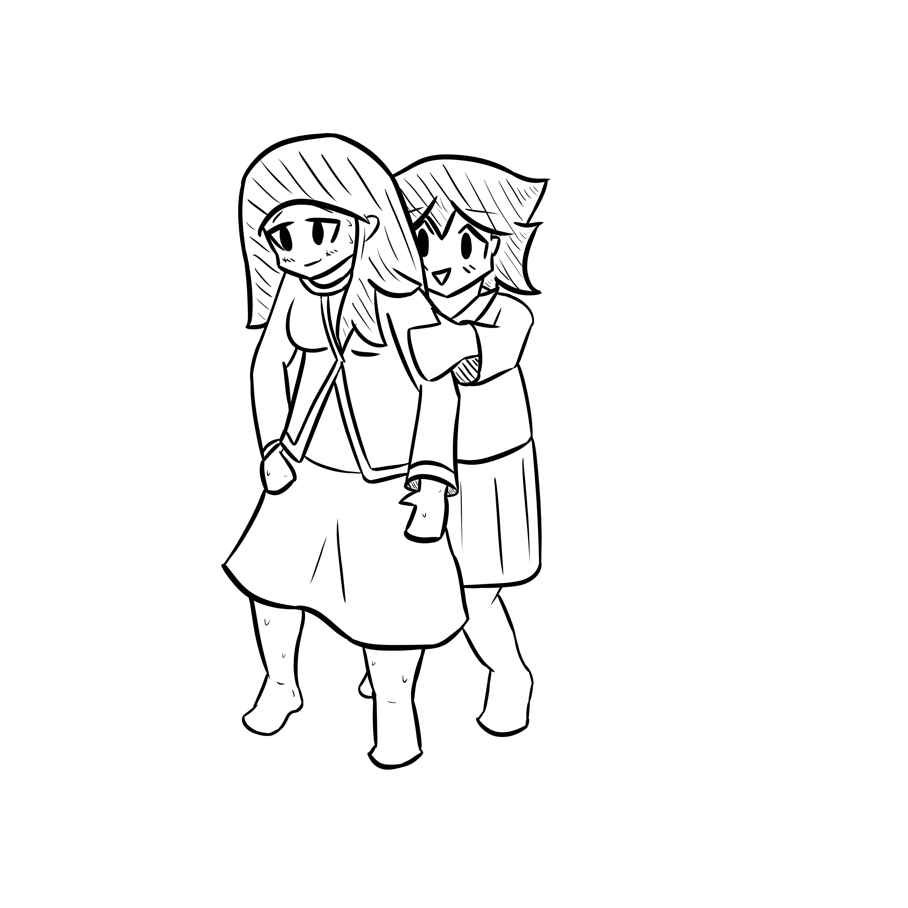

A Propos
 Bonjour, je suis Ethan, étudiant en informatique à l'IUT de Nantes Joffre. Je modifie un jeu dans mon temps libre et parfois je dessine.
Je pense avoir quelques compétences en HTML/CSS, en Python, en C, et un petit peu en Javascript. J'habite au Temple-de-Bretagne, soit à 25 minutes de Nantes.
Je suis capable de communiquer aisément en Anglais.
Bonjour, je suis Ethan, étudiant en informatique à l'IUT de Nantes Joffre. Je modifie un jeu dans mon temps libre et parfois je dessine.
Je pense avoir quelques compétences en HTML/CSS, en Python, en C, et un petit peu en Javascript. J'habite au Temple-de-Bretagne, soit à 25 minutes de Nantes.
Je suis capable de communiquer aisément en Anglais.
3 Dessins que j'ai fait :



Survol
Je fus préparateur de commandes à la SCA Ouest. Je compte chercher dans le futur des métiers dans l'informatique. Aujourd'hui j'ai des projets persos surtout.
Voici les liens utiles: